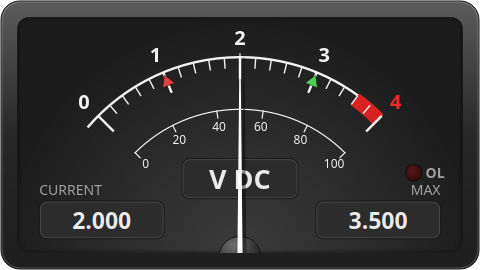
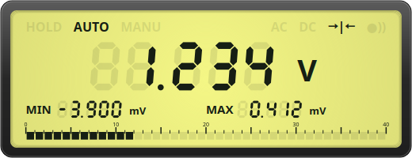
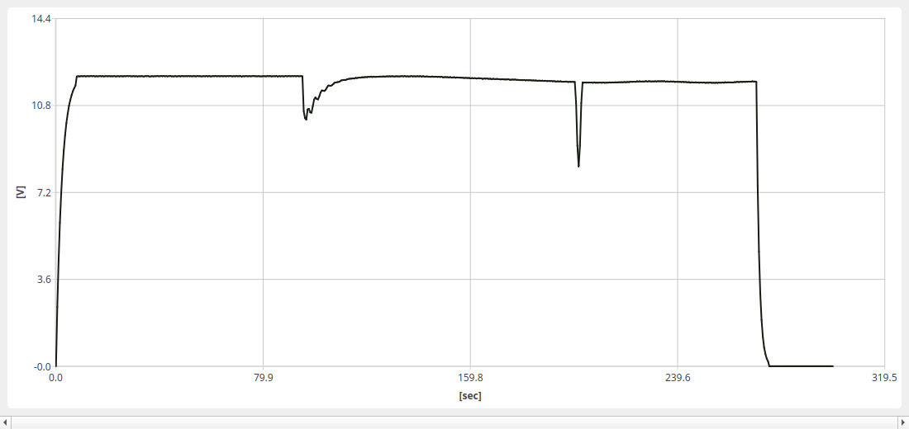
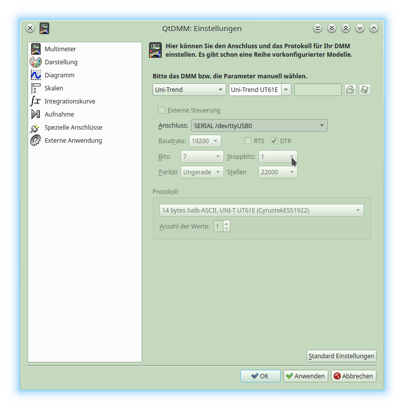
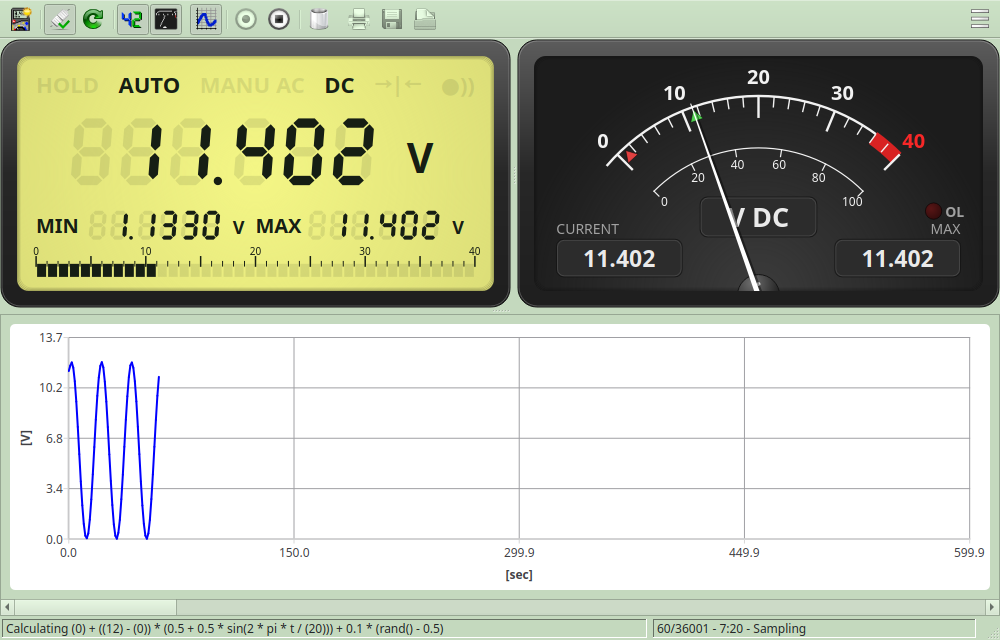
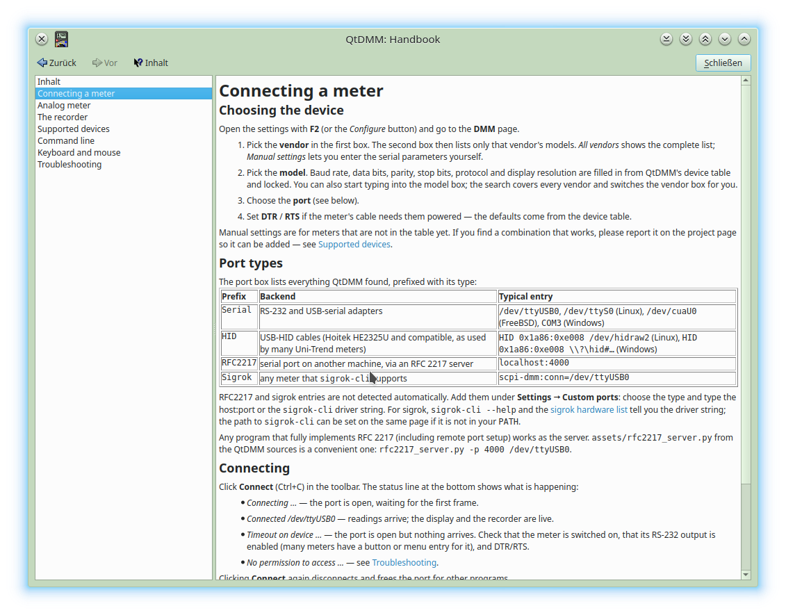

A readout that looks like an instrument, a recorder that behaves like a chart recorder — and a device list that saves you from guessing baud rates.

A procedurally drawn needle instrument in the style of a studio VU meter: dark or ivory face, mirrored‑scale ballistics on the needle, a red overrange zone and an OL lamp that lights when the meter reports overload.

Seven‑segment digits on a warm LCD‑green face with ghost segments, a 40‑segment bargraph and the annunciators you know from the meter itself: HOLD, AUTO/MANU, AC/DC, diode, continuity, REL.

Built on Qt Charts. Record a battery discharge over a weekend or a thermistor over a minute — the sample rate and window length are yours.

Picking a vendor and model fills in baud rate, parity, stop bits and the control lines the cable needs. Unknown meters: choose Manual settings and a protocol.
Run one QtDMM per meter. Instances find each other and can be started and stopped together, so voltage and current recordings line up. A third instance can calculate from the others: choose the model QtDMM / Calculated value, give it a unit and a formula such as u * i, and it behaves like any meter — display, needle, recorder, export.
1.5k, 22u), sqrt, abs, log10, min/max …
Pick the model QtDMM / Virtual meter and QtDMM generates a value itself. Two things it is good for: testing — try the panels, the recorder and thresholds, or give a demo without any hardware — and standing in for a meter you don't have.
Typical case: a bench supply with its own voltage readout and one real DMM measuring the current. For power you would need a second meter — instead, set a virtual meter to the supply's fixed voltage and let a calculated instance multiply it with the live current. Not lab‑grade, but as long as the supply is regulated and not at its limits it is all you need. The same trick supplies a constant for temperature compensation, a probe factor, or a simulated sine for trying out a formula.
u * i works with a virtual u
The manual is embedded in the program (F1, searchable with Ctrl+F) and published at qtdmm.de/docs; developers find the API reference at qtdmm.de/api. Every action has a keyboard shortcut, shown in its tooltip: Space starts and stops the recorder, Ctrl+Del clears it, F11 goes full screen — the complete list is grouped by window.
Interface languages: English, German, French, Spanish and Polish.